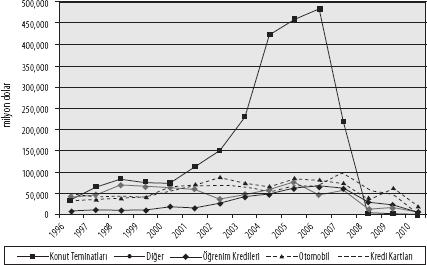

Kaynak: IMF[31]
İpotekler dışında, menkul kıymet ihraçlarının temelinde başka hangi tip gelir akışları yer alıyor? Moddy's kuruluşu, varlığa dayalı menkul kıymetlere temel oluşturan varlık sınıflarını şöyle sıralıyor: Uçak kiraları, konut teminatlı krediler, araç kredileri ve kiraları, prefabrik evler, kredi kartı alacakları, küçük işletme kredileri, perakende finansman kredileri, öğrenim kredileri, ekipman kredileri ve kiraları, marka kiralama kredileri, devre mülk kredileri, tütün anlaşmaları[32] ve sağlık hizmeti alacakları.[33]
Şekil 3, Birleşik Devletler'de Moody's tarafından listelenmiş belli başlı menkul kıymetlerin ihracına dair 1996 ile 2010 arasında elde edilmiş verileri gösteriyor. Konut teminatlı menkul kıymet ihracının, 2000'den 2007'ye kadar çok sert bir büyüme sergilediğini görüyoruz. 2007 itibarıyla, tüm menkul kıymet ihraçları içindeki paylarının yüzde 65'e çıktığını belirtelim. Finansal kriz döneminde ise, konut teminatlı menkul kıymet ihracı 2006'daki 483 trilyon $'lık zirve noktasından baş aşağı düşerek, 2009'da 2 trilyon $ seviyesine indi.[34] Doğrudan hane halkı kaynaklı gelir akışlarına dayalı menkul kıymetlerin ne kadar baskın olduğunu da yine Şekil 3'te fark edebiliyoruz: Konut teminatları, otomobil kredileri, kredi kartı kredileri ve özellikle 2001 sonrasında, öğrenim kredileri. Hatta şekildeki "diğer" sınıfı, doğrudan hane halkı gelirlerine dayanmayan menkul kıymet ihraçlarını içine almakta ve ilgili dönem boyunca hayli düşük kalmasıyla dikkat çekmekte.
Şekil 3: ABD'de Varlığa Dayalı Menkul-Kıymetleştirme Etkinliği, Varlık Tiplerine Göre Yeni İhraçlar, 1996-2010 (milyon dolar)
